KuiklyTable
基于 KuiklyUI 的跨端表格组件，支持 Android、iOS、鸿蒙。
仓库提供两级正式表格：TableView / KuiklyTable（基础表格）与 DataTableView / KuiklyDataTable（数据表格）。KuiklyDataTable 复用 KuiklyTable 的列布局、行渲染、主题与 renderer，叠加行选择、筛选与客户端分页，不重复实现基础能力。
| 入口 | 定位 |
|---|---|
TableView / KuiklyTable | 基础展示、布局、分隔线、双向滚动（表头纵滚固定）/ 左固定列、主题、renderer |
DataTableView / KuiklyDataTable | 行选择、全选 / 半选、筛选、客户端分页；复用 KuiklyTable 全部能力 |
能力关系：KuiklyDataTable 是 KuiklyTable 的组合封装（Kuikly 组合组件），拥有 KuiklyTable 的全部能力——列宽与对齐、排序、双向滚动、样式主题、斑马纹、自定义单元格 / 表头、超出省略、分隔线、圆角、固定列、加载 / 空态、触底加载、虚拟滚动对两者同样适用。KuiklyDataTable 章节只讲新增能力（行选择、筛选与分页）。对应地，DataTableAttr / DataTableEvent 继承 TableAttr / TableEvent，只新增独有属性与事件。
快速接入
环境要求（Kuikly 依赖坐标与 Kotlin 版本绑定，须一致）：
| 依赖 | 版本 |
|---|---|
| Kuikly | 2.23.2（坐标 2.23.2-2.1.21；鸿蒙 2.23.2-2.0.21-ohos） |
| Kotlin | 2.1.21（鸿蒙 2.0.21-ohos） |
| KSP | 2.1.21-2.0.1 |
将本仓库的 KuiklyTable 模块引入你的 Kuikly 工程：
// settings.gradle.kts
include(":KuiklyTable")
project(":KuiklyTable").projectDir = file("path/to/KuiklyTable")// 业务模块 build.gradle.kts
kotlin {
sourceSets {
val commonMain by getting {
dependencies {
implementation(project(":KuiklyTable"))
}
}
}
}配置自由度
读 API 表时，「自由度」列只用下面三类标签。具体传值与默认值以各 API 表为准；怎么用见功能章步骤。
| 标签 | 含义 | 例子 |
|---|---|---|
| 仅枚举 / 开关 | 只能在给定选项里选，不能发明新取值 | 对齐左/中/右；斑马开/关 |
| 预设 + 可自定义 | 有推荐预设或常量，也可换成任意合法值 / 自己拼 | 主题 Light/Dark/Blue 或 copy；线 Grid/Horizontal/None 或 Custom；圆角 0/8/12 或任意 dp |
| 完全自定义 | 没有封闭选项集，由业务决定内容 | 列标题、renderer、筛选函数、pageSizeOptions 列表 |
字段真相源：TableAttr、ColumnModel、DataTableAttr。
基础表格
一张表开箱就能用：右侧示例是默认外观——网格线（外框 + 行线 + 列竖线）、8dp 圆角、纵滚时表头固定（表头不参与纵向滚动）。默认无斑马纹；隔行变色见斑马纹的表格。这些都可以按需改，见下方步骤与后续专章。
使用步骤
- 准备行数据模型，并为每一列写列定义：至少要有列标识（字符串）、表头标题（字符串）、单元格取值（返回字符串的函数）。
- 把三样东西交给表格：
- 列定义列表 →
columns - 行数据 →
data（默认空列表） - 稳定行标识 →
rowKey（不传则用源数据下标）
- 列定义列表 →
- 需要时改默认外观（取值与标签见TableAttr）：
- 需要交互时再接事件（可选）：点行
rowClick、点单元格cellClick、排序变化sortChange等。
data class User(val id: String, val name: String, val age: Int, val email: String)
TableView<User> {
attr {
columns.addAll(
listOf(
ColumnModel(key = "name", title = "姓名", accessor = { it.name }, width = 80f),
ColumnModel(
key = "age",
title = "年龄",
accessor = { it.age.toString() },
width = 60f,
sortable = true,
sortComparator = compareBy { it.age },
),
ColumnModel(
key = "email",
title = "邮箱",
accessor = { it.email },
minWidth = 140f,
flex = 2f,
),
)
)
data = users
rowKey = { it.id }
// zebraStripe 默认 false；要隔行变色设 true，见「斑马纹的表格」
// 表头纵滚固定（fixedHeader=false 无效）
// lineMode 默认 TableLineMode.Grid：外框 + 行线 + 列竖线
// 无竖线：lineMode = TableLineMode.Horizontal；全部关闭：TableLineMode.None
}
event {
rowClick = { user -> /* 行点击 */ }
cellClick = { info -> /* 单元格点击 */ }
sortChange = { state -> /* 仅 columnKey + 方向；规则见列 sortComparator */ }
}
}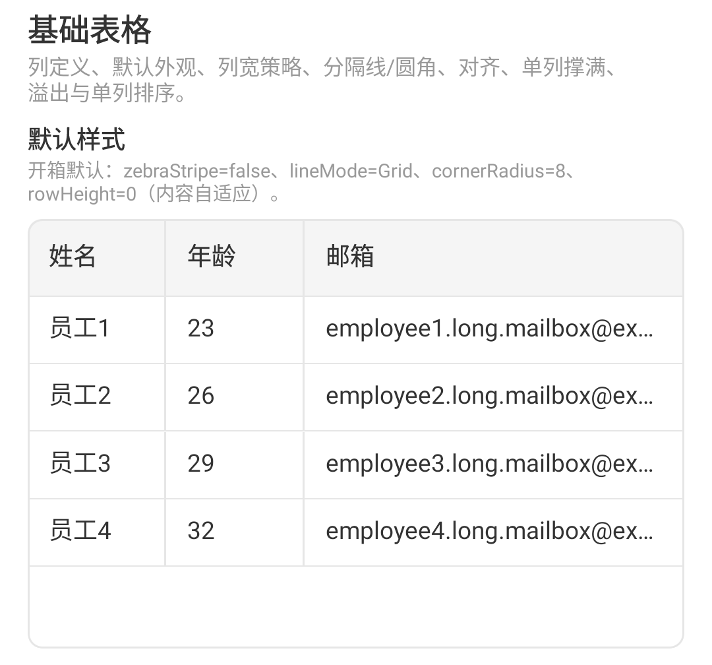
列宽与对齐的表格
列宽有两种策略，可在同一张表里混用：固定像素宽，或弹性列（吃剩余宽度，且不小于最小宽）。单元格文字默认左对齐；数值列也不会自动居右，要对齐需显式配置。
使用步骤
- 列宽两种策略互斥：
- 固定宽：写
width = 正数 dp（例如80f）。有width时不再走弹性。 - 弹性列：
width保持null（默认），再设minWidth（默认100f）和flex（默认1f）。
- 固定宽：写
- 哪一列做成弹性由接入方决定。Showcase 对照里用「邮箱」做弹性列（长内容更易看出拉满容器）；短列也可弹性，只是观感较弱。
- 对齐只能三选一（默认左）：
Start/Center/End。数值列不会自动居右，要右对齐须显式写End。
// 固定宽
ColumnModel(key = "name", title = "姓名", accessor = { it.name }, width = 80f)
// 弹性宽
ColumnModel(key = "email", title = "邮箱", accessor = { it.email }, minWidth = 140f, flex = 2f)
// 显式对齐：Start / Center / End
ColumnModel(
key = "age",
title = "年龄",
accessor = { it.age.toString() },
alignment = ColumnAlignment.End,
)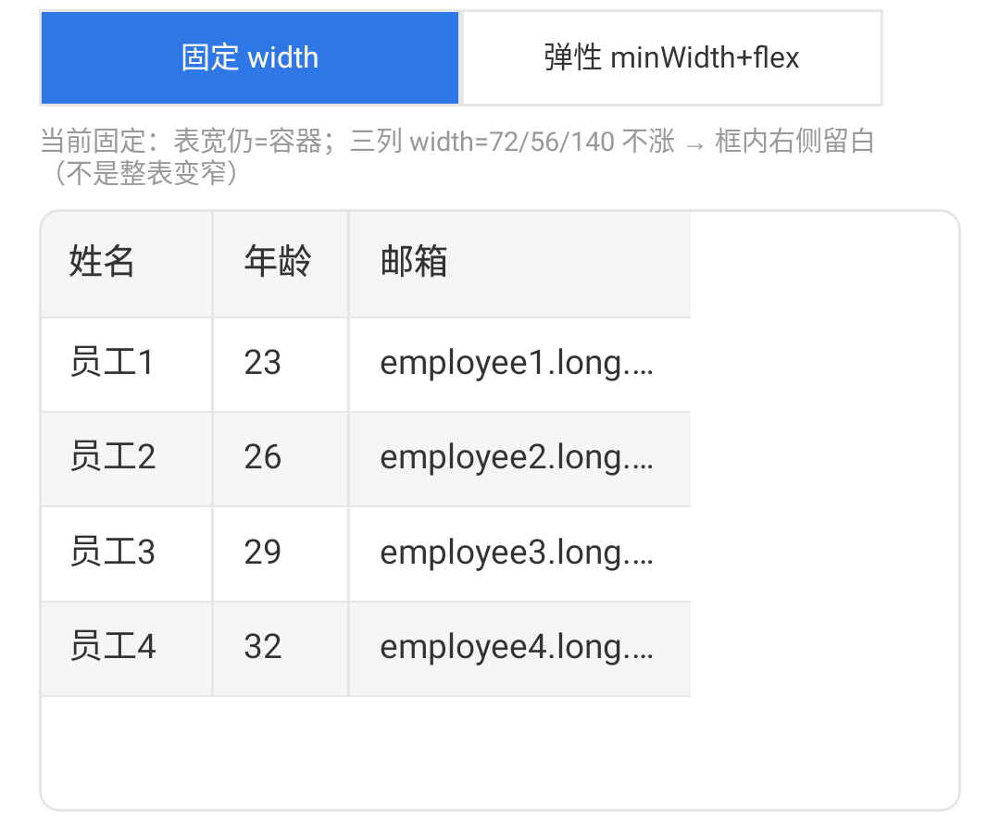
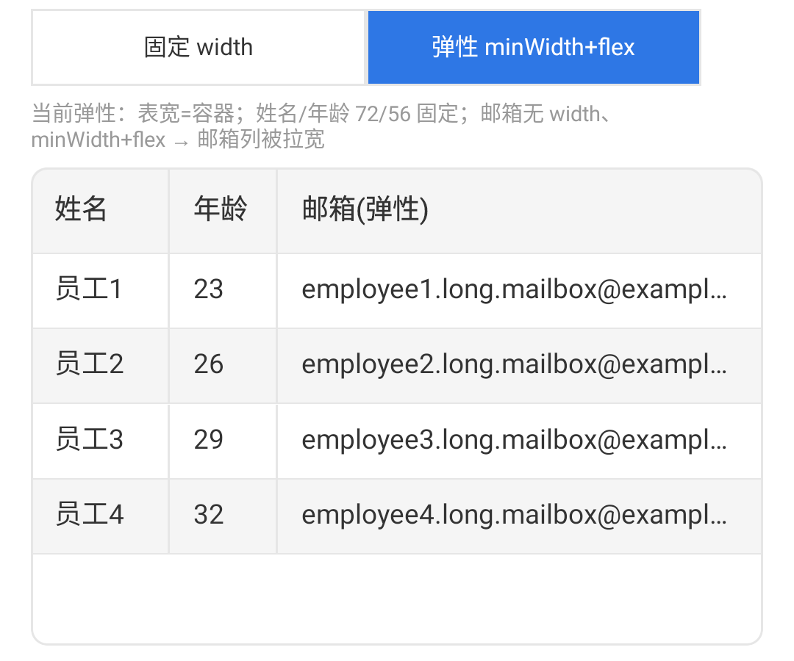
可排序的表格
排序拆成两件事，不要混在一起：
- 规则写在列上
ColumnModel.sortComparator（怎么比）。 - 事件
sortChange只告诉你当前排哪一列、升/降/取消（状态），不携带比较器。
点可排序列表头：升序 → 降序 → 取消。Table 用该列规则重排展示行，不改你传入的原始 data。未传 sortComparator 时按 accessor 字符串比——数字列会出现 "10" 排在 "9" 前，务必自传规则。
使用步骤
- 列上
sortable = true，并写清规则，例如年龄sortComparator = compareBy { it.age }（按 Int，不是 "20" 字符串）。 - 需要受控时：在
sortChange里把state写回sortState；这里只处理「排谁 / 什么方向」。 - 换规则：改列上的
sortComparator，不必改事件签名。
// 1) 规则在列上
ColumnModel(
key = "age",
title = "年龄",
accessor = { it.age.toString() }, // 只影响展示文案
sortable = true,
sortComparator = compareBy<User> { it.age }, // 按数字比
)
// 姓名若展示「员工N」且要按编号：compareBy { it.id }（或解析编号），勿依赖默认字符串序
// 2) 事件只通知状态（与规则解耦）
event {
sortChange = { state ->
// state.columnKey / state.direction
// 不要指望从这里拿到 Comparator
}
}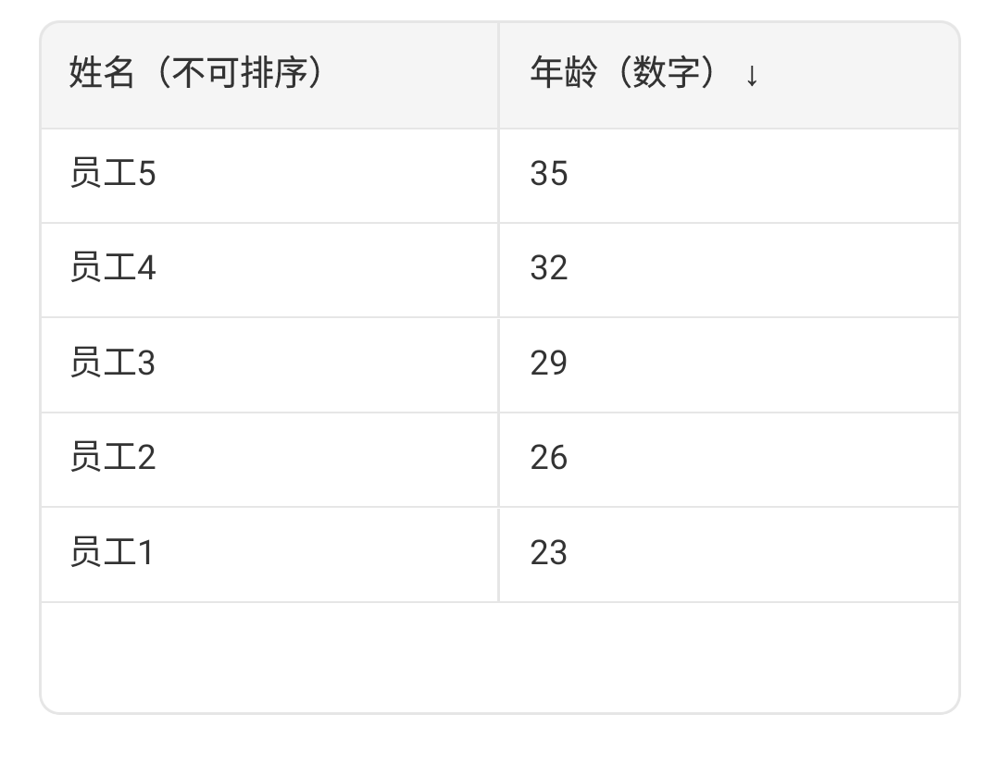
双向滚动的表格
列总宽超出可视宽度时可以左右滑，表头会跟着横滑对齐；行数超出高度时可以上下滑，表头纵滚固定（不参与纵向滚动）。右侧动图即该行为。
使用步骤
- 先让表格父容器有明确高度（或用
flex(1f)撑满），否则纵向滚不起来。 - 列宽之和大于可视宽度就会出现横滚。可选：显式指定表格总宽
tableWidth：null（默认）→ 沿父容器撑满- 正数 dp（如
600f）→ 表格按该宽度布局
- 要「回到顶部」：保留表格引用后调用
scrollToTop(animated)：animated = true→ 带动画回顶animated = false（默认）→ 立刻跳到顶部
attr {
// tableWidth = 600f // 默认 null：沿父容器撑满
}需要回到顶部时调用 scrollToTop：
val tableRef = TableView<User> { /* ... */ }
tableRef.scrollToTop(animated = true)
可自定义样式的表格
每张表可以单独配色，不跟 App 全局主题走。内置三套预设：浅色 / 深色 / 蓝色；也可以在某一套预设上只改某几块颜色（表头底、选中行底、分隔线等）。色值类型是 Long ARGB（形如 0xAARRGGBB）。
使用步骤
- 给这张表传入
themeColors（只影响当前表）。 - 整表换肤——三套预设之一：
TableThemeColors.Light（默认，等价于TableThemeColors()）TableThemeColors.DarkTableThemeColors.Blue
- 只改某几块颜色：对预设
copy(...)，或TableThemeColors(...)自建全套。色值为LongARGB（0xAARRGGBB）。改动很小会几乎看不出——这是预期；要对比明显就多改几项，或先换预设再微调。 - 行多选时的选中行底色是字段
selectedRowBackground；开启行选择后才看得见。详见可选中行的表格。
attr {
// 1) 一行切换预设
themeColors = TableThemeColors.Dark
}
attr {
// 2) 只改表头底与选中行，其余跟随 Dark
themeColors = TableThemeColors.Dark.copy(
headerBackground = 0xFF2A2A2A,
selectedRowBackground = 0xFF1A3A5C,
)
}常用颜色对照（中文含义 → 字段名；值均为 Long ARGB）：
- 表头底色 / 表头文字 →
headerBackground/headerText - 普通行底 / 斑马纹隔行底 →
rowBackground/rowBackgroundAlt（需zebraStripe = true） - 选中行底色 →
selectedRowBackground - 选择框未选中时的填充 →
selectionControlBackground - 主文本 / 次要文本 →
cellText/cellTextSecondary - 分隔线颜色 →
dividerColor（可传具体色值，或null表示回退gridLine） - 状态标签预设色 →
statusTag*（成功 / 警告 / 危险 / 中性 / 信息 各有底色与文字色）
完整字段见文末 API 表。
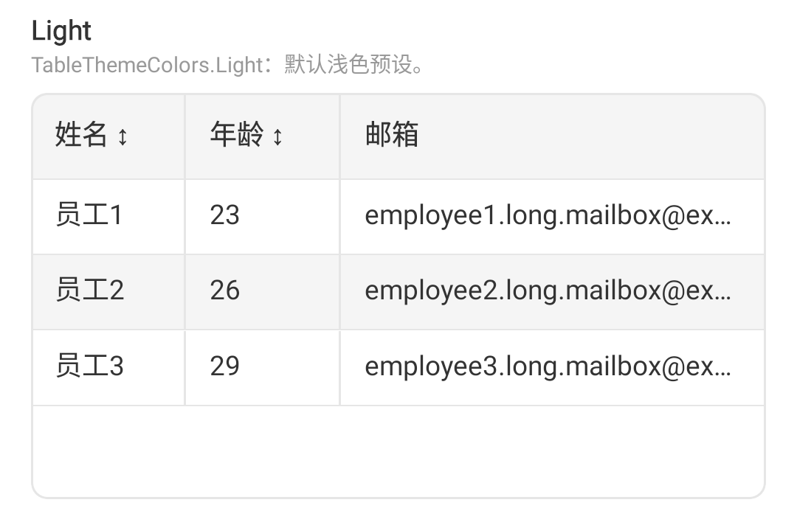
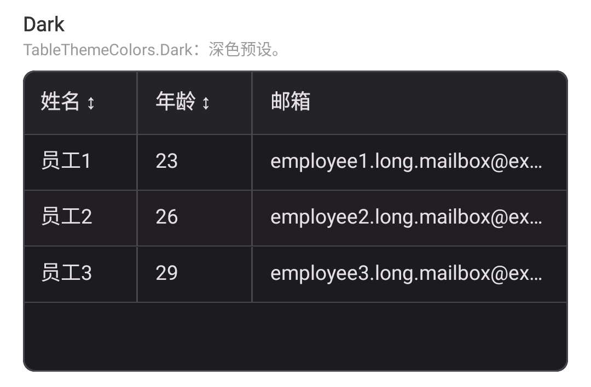
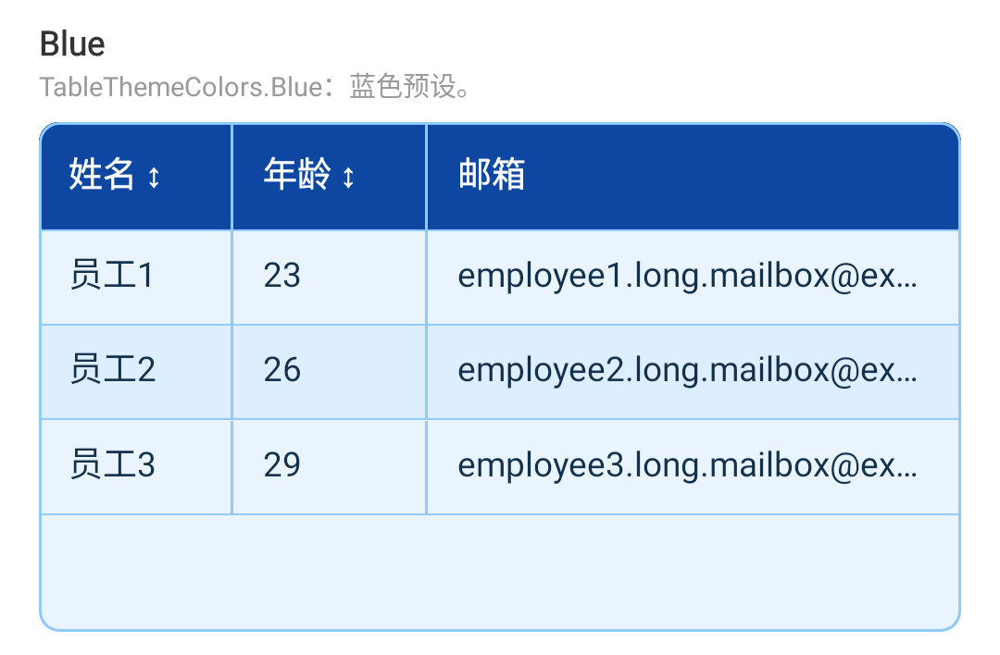
斑马纹的表格
隔行变色由 zebraStripe 控制，默认关闭（开箱无斑马纹见基础表格）。开启后偶数行使用主题 rowBackgroundAlt。行选择的选中底色不是斑马纹，见可选中行的表格。
使用步骤
- 设
zebraStripe = true开启隔行底色。 - 隔行颜色改主题
rowBackgroundAlt（ARGB），或整表换Light/Dark/Blue。 - 要关回默认：不写该字段，或显式
zebraStripe = false。
attr {
zebraStripe = true // 默认 false；设 true 开启隔行底色
}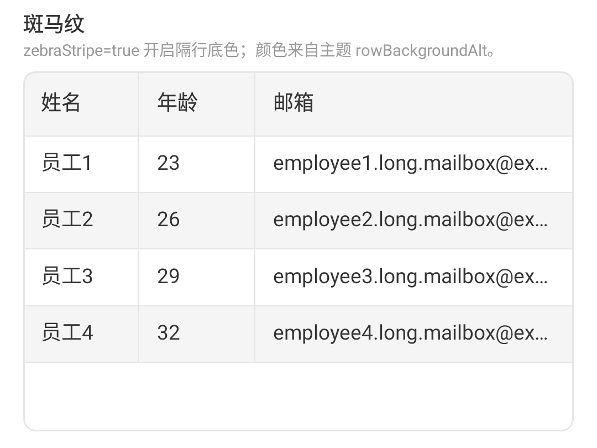
自定义单元格的表格
某一列可以自己画单元格内容（头像、彩色标签、操作按钮等）；不传自定义绘制时，仍显示默认文本。Web 端默认文本自带悬停完整文案；自定义绘制不会自动带这个提示。
使用步骤
- 何时用：默认纯文本不够看——需要标签、按钮、头像等。
- 怎么配：在该列传入单元格绘制函数
cellRenderer：- 类型：
((T, ColumnModel<T>) -> Unit)? - 可传值：函数体（自定义 UI）或
null（默认，走纯文本）
- 类型：
- 同列常一起配的布尔项（默认都是
true）：enableRowClick：true/false— 点该列是否冒泡行点击enableCellClick：true/false— 点该列是否触发单元格点击
false，由绘制函数自己处理按钮。 - 不配时：不写绘制函数 = 回退默认文本（关自定义 = fallback）。自定义内容不参与溢出截断检测，也不自动带 Web 悬停提示。
ColumnModel<User>(
key = "status",
title = "状态",
accessor = { it.status },
width = 90f,
enableRowClick = true,
enableCellClick = false,
cellRenderer = { user, _ ->
View {
attr { flex(1f); allCenter() }
Text {
attr { text(user.status); fontSize(12f) }
}
}
},
)点击优先级：截断溢出提示 > cellClick > rowClick。操作列通常两个开关都关，由 renderer 内 Button 自行处理点击与按压。

单元格超出省略的表格
默认文本太长时会单行省略号截断。组件负责判断「是否被截断」，并在点击时把完整文案与相对 Table 根的估算矩形告诉你；浮层怎么画由业务决定。Web 端默认文本还有浏览器自带的悬停提示。
使用步骤
- 默认文本超长会自动省略；若该列用了
cellRenderer，则不走溢出检测。 - 开关
enableOverflowCellClick：true（默认）可点截断格；false不触发。 - 在
overflowCellClick里用info.estimatedCellX / Y / Width / Height画浮层：- 把浮层放在 Table 外包的
positionRelative容器里 - 直接使用上述字段定位（点击时优先为单元格实测矩形，经
convertFrame转到 Table 根；测量失败才回退估算） - 不要再加状态栏 / 页头 / 固定
390之类硬编码偏移
- 把浮层放在 Table 外包的
- 浮层内容由业务定（Showcase：贴单元格的深色气泡 + 三角指向，只展示全文）。
- 复制完整内容：接
cellLongPress，用info.text调宿主剪贴板（组件不内置复制）。 - 关闭时机接
overflowTipDismiss（再点 / 滚动 / 点别处）。
// 浮层锚在 Table 外包容器内
View {
attr { positionRelative(); /* 与 Table 同高 */ }
TableView<User> {
event {
overflowCellClick = { info ->
if (!info.isOverflow) return@overflowCellClick
// tipLeft = info.estimatedCellX
// tipTop = info.estimatedCellY + info.estimatedCellHeight + gap
showOverflowTip(info)
}
overflowTipDismiss = { hideOverflowTip() }
cellLongPress = { info ->
// 宿主 BridgeModule.copyToPasteboard(info.text)
}
}
}
// 在此容器内 absolutePosition 绘制 tip
}点击优先级：截断溢出提示 > cellClick > rowClick；自定义 cellRenderer 的单元格不参与溢出检测。长按走独立的 cellLongPress。
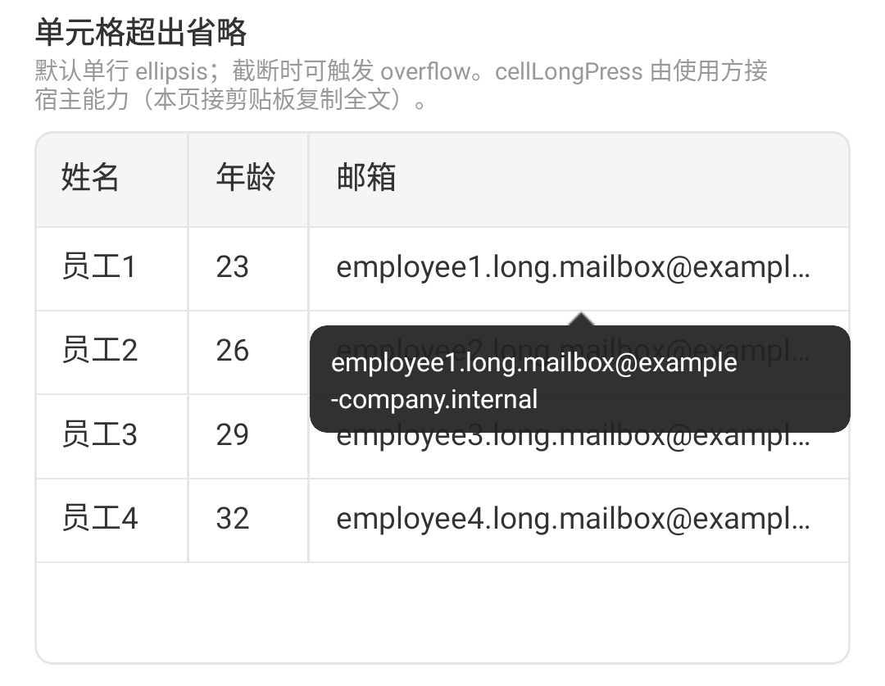
分隔线的表格
线怎么画由 lineMode 控制，与圆角无关。默认 Grid：外框 + 表头线 + 行线 + 列竖线。
使用步骤
- 预设：
Grid（默认）→ 外框 + 表头 + 行 + 列Horizontal→ 仅表头底线与行线None→ 全部关闭
- 自定义：
Custom(TableLineStyle(...))；每一项是TableStroke(color, width)或null（关那一根）。
attr {
lineMode = TableLineMode.Grid // 默认
// TableLineMode.Horizontal
// TableLineMode.None
}Custom 模式逐项指定颜色、宽度，字段为 null 表示关掉该线：
lineMode = TableLineMode.Custom(
TableLineStyle(
outer = TableStroke(0xFF2E77E5, 2f),
header = TableStroke(0xFF2E77E5, 2f),
row = TableStroke(0xFF2E77E5, 2f),
column = TableStroke(0xFF2E77E5, 2f),
listRow = TableStroke(0xFF2E77E5, 2f),
),
)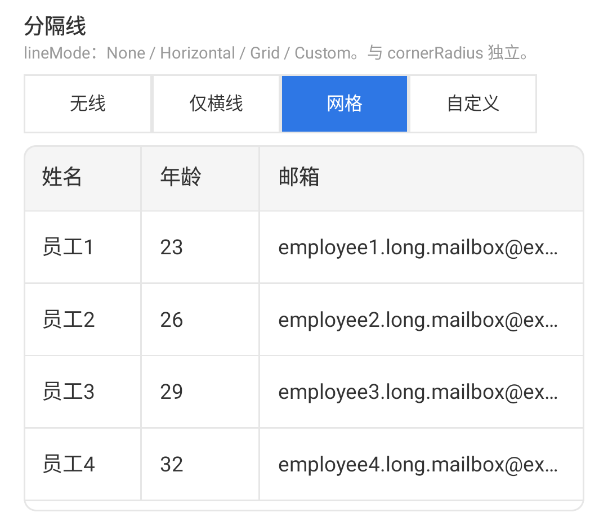
圆角的表格
外框圆角由 cornerRadius 控制，与 lineMode 独立。默认 8dp；设为 0 关闭圆角。
使用步骤
- 常量：
TableCornerRadius.None（0）/Default（8，默认）/Large（12）。 - 或任意
Floatdp。
attr {
cornerRadius = TableCornerRadius.Default // 0 / 8 / 12 或任意 dp
}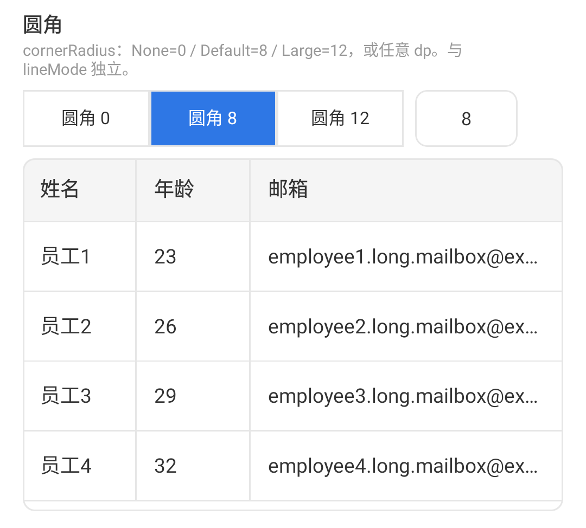
加载状态的表格
打开「加载中」后，表格上方会盖一层遮罩：旧内容还在，但点不到下面，避免加载时误触。遮罩里的转圈和文案可以整段换成自己的。
使用步骤
- 开关
loading：false（默认）→ 正常显示数据区true→ 显示加载态（请求开始开、结束关）
- 文案
loadingText：任意字符串，默认"加载中…"（仅在未自定义绘制时生效）。 - 可选
loadingRenderer：绘制函数或null（默认用内置指示 +loadingText）。
attr {
loading = isLoading
// loadingRenderer = { /* 自定义加载态 */ }
}空表格
没有行数据时（或筛选后一行不剩）会显示空态占位。可以只改提示文案，也可以整块换成自己的空态界面。
使用步骤
- 传入空列表（或筛选结果为空）即出现空态；无需额外开关。
- 文案
emptyText：任意字符串，默认"暂无数据"。 - 可选
emptyRenderer：绘制函数或null（默认用内置空态图形 +emptyText）。
attr {
data = emptyList()
emptyText = "暂无数据"
// emptyRenderer = { /* 自定义空态 */ }
}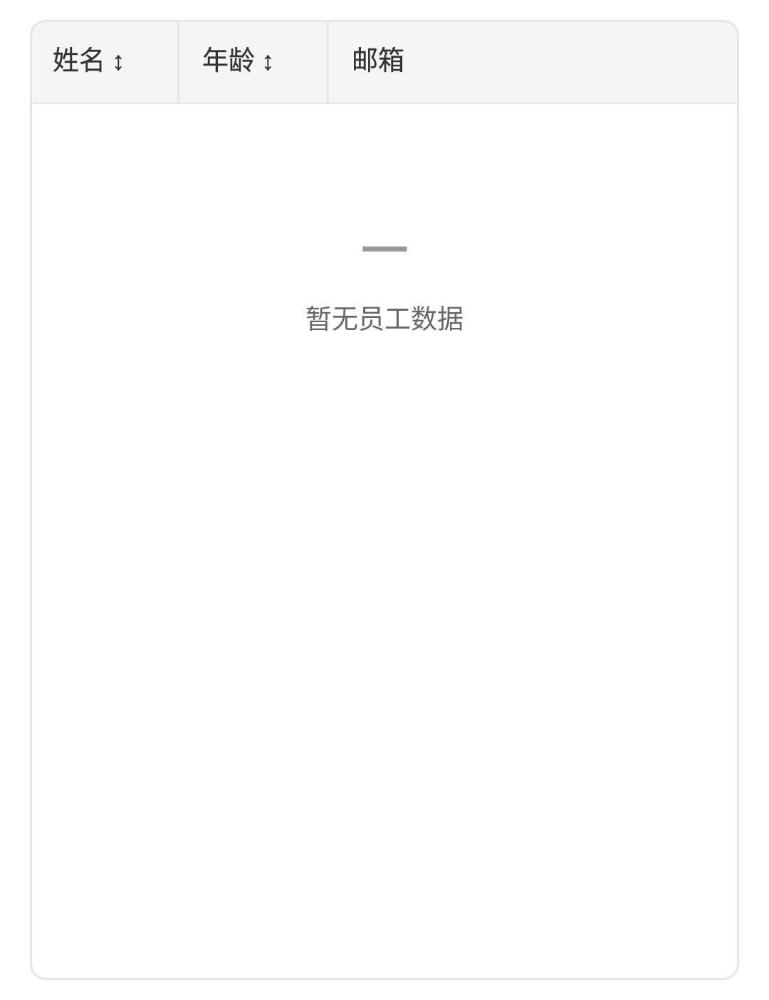
触底加载的表格
滚到接近底部时，组件会回调「加载更多」并显示底部加载态；下一页数据怎么请求、如何拼进列表，由业务自己做。可以调「距底还有几行就提前触发」。
使用步骤
- 两个布尔状态（由业务维护）：
hasMore：true= 还有下一页可拉；false（默认）= 没有更多loadingMore：true= 正在加载更多（避免连发）；false（默认）
- 事件
loadMore：滚近底部时回调；请求中保持loadingMore = true。 - 提前量
loadMoreThresholdRows：正整数，默认3（距底约 N 行再触发）。
attr {
hasMore = pageHasMore
loadingMore = isLoadingMore
// loadMoreThresholdRows = 3 // 距底部约 N 行触发
}
event {
loadMore = { fetchNextPage() }
}可选中行的表格
本章讲 DataTable 的数据交互；列宽、排序、滚动、主题、自定义单元格、分隔线、固定列、状态层等基础能力与 KuiklyTable 相同。虚拟滚动见下方专章。
打开「行选择」后，表格左侧会出现选择列，选中行会换底色高亮；关掉则去掉选择列并清空高亮。选中身份跟「稳定行标识」走：排序只改展示顺序，已选中的行不会丢。
使用步骤
enableRowSelection = true开启选择列（默认false；需稳定rowKey）。- 用
selectedKeys+selectionChange做受控同步（默认空列表）。 - 选择列宽
selectionColumnWidth任意 dp，默认48f。 - 选中行底色改主题
selectedRowBackground（ARGB），或换Dark/Blue。详见可自定义样式的表格。
DataTableView<User> {
attr {
flex(1f) // 撑满父容器，否则拿不到高度不渲染
enableRowSelection = true
selectedKeys = currentSelectedKeys
// 可选：只改选中行底色，其余跟随 Light
// themeColors = TableThemeColors.Light.copy(selectedRowBackground = 0xFFBBDEFB)
data = users
rowKey = { it.id }
columns.addAll(/* 同 TableView */)
}
event {
selectionChange = { keys -> currentSelectedKeys = keys }
}
}表头复选框三态：未选 / 半选 / 全选。半选或未选时点击 → 全选当前可见行；全选再点 → 清空当前可见选中。


可筛选的表格
筛选发生在数据处理的最前面：原始数据 → 筛选 → 单列排序 → 分页。不传筛选条件表示不过滤。组件不内建搜索框，筛选项由业务自己做，再把条件或过滤后的数据交给表格。条件一变，若开了分页会回到第一页。
使用步骤
- 配置项
filterPredicate：- 类型：
((T) -> Boolean)? null（默认）→ 不过滤，显示全部行- 函数 → 返回
true的行保留，返回false的行隐藏
- 类型：
- 界面上的筛选项（芯片、输入框等）由业务自己做，再把条件赋给
filterPredicate。 - 条件变化后，若开了分页（
enablePagination = true），会自动回到第一页。
attr {
filterPredicate = { it.status == "在职" } // null 表示不过滤
}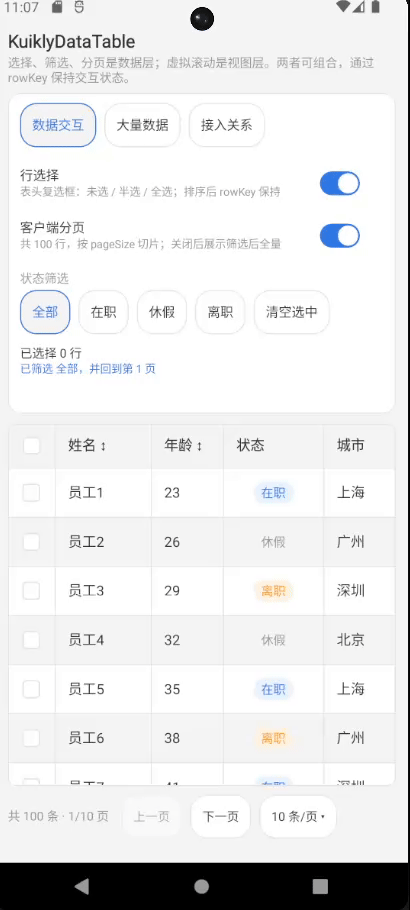
可分页的表格
打开客户端分页后，底部会出现分页栏：总条数、当前页、上一页 / 下一页，以及「每页多少条」下拉。当前页码和每页条数由你传入，翻页或改每页条数时表格会回调让你写回；翻页会自动回顶；筛选或改每页条数会回到第一页。
使用步骤
enablePagination = true显示底部分页栏（默认false）。- 受控：
pageIndex（从 0 起）与pageSize（默认10），在pageChange/pageSizeChange里写回。 - 下拉选项
pageSizeOptions：默认[5, 10, 20]，可换成任意正整数列表（如[10, 25, 50]）。
attr {
enablePagination = true
pageIndex = currentPage
pageSize = 10
pageSizeOptions = listOf(5, 10, 20) // 分页栏「N 条/页 ▾」下拉选项
}
event {
pageChange = { index -> currentPage = index }
pageSizeChange = { size -> pageSize = size }
}右侧第一张图是分页栏整体；第二张动图是点开「N 条/页」后的选项列表。

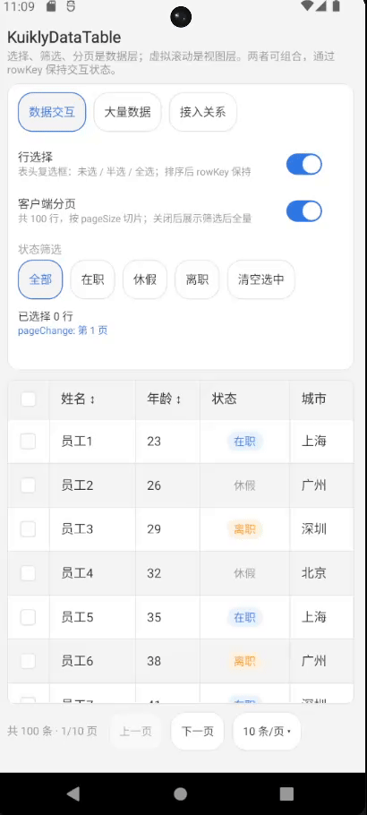
虚拟滚动的表格
数据行很多时，不必把每一行的界面节点都挂上：虚拟滚动只渲染窗口附近的行，用来减轻卡顿。实现上由 Table 自研「切片 + 上下 spacer」维护滚动高度，随纵滑移动窗口；完整数据仍在内存。它和筛选、分页是两套事——可以同时开，也可以像 Showcase「大量数据」页那样关掉分页、只看连续纵滑。
使用步骤
- 设固定行高
rowHeight为正数 dp（例如48f）；默认0f表示按内容，Windowed 下必须改为正数。 rowRenderMode：Standard（默认）→ 每行挂 DSL 节点Windowed(maxRenderedRows)→ 最多挂 N 行（切片 + spacer）；N 为正整数，省略时用常量60；建议约可见行数 × 3
- 创建时选定模式；中途切换需重建表格，不要热切换。
- 不要和
fixedFirstColumn = true一起开；完整数据仍在内存，只是少挂行节点。
DataTableView<User> {
attr {
data = largeUsers // 例如 3000 行
filterPredicate = { it.status == "在职" }
rowHeight = 48f // Windowed 需要固定行高
fixedFirstColumn = false // 暂不与固定列组合
rowRenderMode = TableRowRenderMode.Windowed(90)
}
}- 只限制界面节点数量；完整数据仍在内存，筛选 / 排序仍作用于全量
- 分页切的是「数据切片」，虚拟滚动管的是「挂了多少行 View」——可以同时开，也可以只开虚拟滚动
- 创建时选定模式；运行时切换需重建表格，不要热切换
- 窗口大小建议约「一屏可见行数 × 3」，组件默认 60；Showcase 演示用 90

API 参考 · TableView
fun <T> ViewContainer<*, *>.TableView(init: TableView<T>.() -> Unit)
fun <T> ViewContainer<*, *>.DataTableView(init: DataTableView<T>.() -> Unit)| 方法 | 说明 |
|---|---|
scrollToTop(animated: Boolean = false) | 滚动到顶部 |
TableAttr
「自由度」标签含义见配置自由度。
| 属性 | 类型 | 默认值 | 自由度 | 说明 |
|---|---|---|---|---|
columns | ObservableList<ColumnModel<T>> | [] | 完全自定义 | 列定义 |
data | List<T> | [] | 完全自定义 | 数据源（组件不修改外部列表） |
rowKey | ((T) -> Any)? | null | 完全自定义 | 稳定行标识；未配置时用源索引 |
tableWidth | Float? | null | 完全自定义 | null 表示沿父容器撑满；否则任意正数 dp |
zebraStripe | Boolean | false | 仅开关 | 隔行变色；颜色改主题 rowBackgroundAlt |
lineMode | TableLineMode | Grid | 预设 + 可自定义 | 预设 None / Horizontal / Grid；或 Custom(style) |
cornerRadius | Float | 8f | 预设 + 可自定义 | 常量 0/8/12，或任意 dp |
cellPaddingH | Float | 12f | 完全自定义 | 水平内边距（dp） |
cellPaddingV | Float | 10f | 完全自定义 | 垂直内边距（dp） |
rowHeight | Float | 0f | 完全自定义 | 0 内容自适应；固定列 / Windowed 须正数 |
fixedHeader | Boolean | true | 仅开关 | 纵滚时表头始终固定；写入 false 无效（兼容保留） |
fixedFirstColumn | Boolean | false | 仅开关 | 固定首列；被固定列须显式 width；不与 Windowed 组合 |
themeColors | TableThemeColors | Light | 预设 + 可自定义 | 预设 Light / Dark / Blue，或 copy / 自建 |
rowRenderMode | TableRowRenderMode | Standard | 预设 + 可自定义 | Standard 或 Windowed(n)（n 默认 60）；创建时选定 |
loading | Boolean | false | 仅开关 | 加载中 |
emptyText / loadingText | String | 默认文案 | 完全自定义 | 状态文案 |
emptyRenderer / loadingRenderer | DSL? | null | 完全自定义 | null 用内置；否则整块自定义 |
hasMore / loadingMore | Boolean | false | 仅开关 | 加载更多状态 |
loadMoreThresholdRows | Int | 3 | 完全自定义 | 距底部约 N 行触发 |
enableOverflowCellClick | Boolean | true | 仅开关 | 截断文本点击 |
TableEvent
| 事件 | 说明 |
|---|---|
rowClick | 行点击 |
cellClick | 单元格点击（需列 enableCellClick；含行列信息） |
cellLongPress | 单元格长按（含完整 text；复制等由业务处理） |
sortChange | 排序状态变化（仅列 key + 方向；规则见列 sortComparator） |
overflowCellClick | 截断单元格点击 |
overflowTipDismiss | 溢出提示关闭 |
loadMore | 触底加载更多 |
ColumnModel
「自由度」标签含义见配置自由度。
| 字段 | 类型 | 默认值 | 自由度 | 说明 |
|---|---|---|---|---|
key | String | — | 完全自定义 | 列唯一标识 |
title | String | — | 完全自定义 | 表头文案 |
accessor | (T) -> String | — | 完全自定义 | 默认文本取值 |
width | Float? | null | 完全自定义 | 固定列宽；非 null 时优先于弹性 |
minWidth | Float | 100f | 完全自定义 | 最小宽度（仅 width=null） |
flex | Float | 1f | 完全自定义 | 剩余空间权重（仅 width=null） |
alignment | ColumnAlignment | Start | 仅枚举 | 只能 Start / Center / End；数值列不自动居右 |
sortable | Boolean | false | 仅开关 | 是否可排序 |
sortComparator | Comparator<T>? | null | 完全自定义 | 列上比较规则；null=accessor 字符串。与 sortChange 解耦 |
cellRenderer | DSL? | null | 完全自定义 | null 默认 Text |
headerRenderer | DSL? | null | 完全自定义 | null 默认标题 |
enableRowClick | Boolean | true | 仅开关 | 该列是否允许触发 rowClick |
enableCellClick | Boolean | false | 仅开关 | 该列是否允许触发 cellClick |
DataTableAttr
基础属性即 TableAttr 全部属性（Kotlin 继承，直接可用）；独有属性如下。「自由度」标签含义见配置自由度。
| 属性 | 类型 | 默认值 | 自由度 | 说明 |
|---|---|---|---|---|
enableRowSelection | Boolean | false | 仅开关 | 注入选择列 + 行高亮；关闭时清空 |
selectedKeys | List<Any> | [] | 完全自定义 | 受控选中 rowKey 列表 |
selectionColumnWidth | Float | 48f | 完全自定义 | 选择列宽（dp） |
filterPredicate | ((T) -> Boolean)? | null | 完全自定义 | null 不过滤；筛选项 UI 由业务做 |
enablePagination | Boolean | false | 仅开关 | 客户端分页 |
pageIndex | Int | 0 | 完全自定义 | 当前页（0 起，受控） |
pageSize | Int | 10 | 完全自定义 | 每页行数（受控） |
pageSizeOptions | List<Int> | [5, 10, 20] | 预设 + 可自定义 | 默认下拉选项；可换成任意正整数列表 |
DataTableEvent
基础事件即 TableEvent 全部事件（Kotlin 继承，直接可用）；独有事件如下表：
| 事件 | 说明 |
|---|---|
selectionChange | 勾选或表头全选变化后回调选中 keys |
pageChange | 页码变化 |
pageSizeChange | 页大小变化 |
androidApp 后默认进入 table_home，再进入 table_basic（基础 / 滚动 / 主题 / 自定义 / 状态验证 KuiklyTable）或 table_data（数据交互 / 大量数据 / 接入关系页签验证 KuiklyDataTable）。